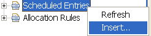
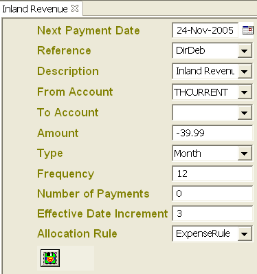
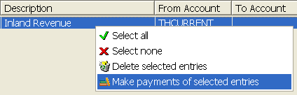

Scheduled Entries

These entries represent the repetitive transactions which occur
periodically, like your direct debits or your standing orders. You can create
a new entry by clicking on the Scheduled Entries node in your Book Explorer
and selecting "Insert..."
. A new screen
will allow you to create a scheduled entry based on the existing transactions
already entered.

You can set the interval and the starting date, then simply select all the
entries which are due (the ones shown in red), then click on the selection
using the right mouse button, then select "Make payments of selected entries"
to record the selected transactions in the Entry accounts. The dates for these
entries will be automatically advanced to the next payment dates after the
transactions are created.
 |